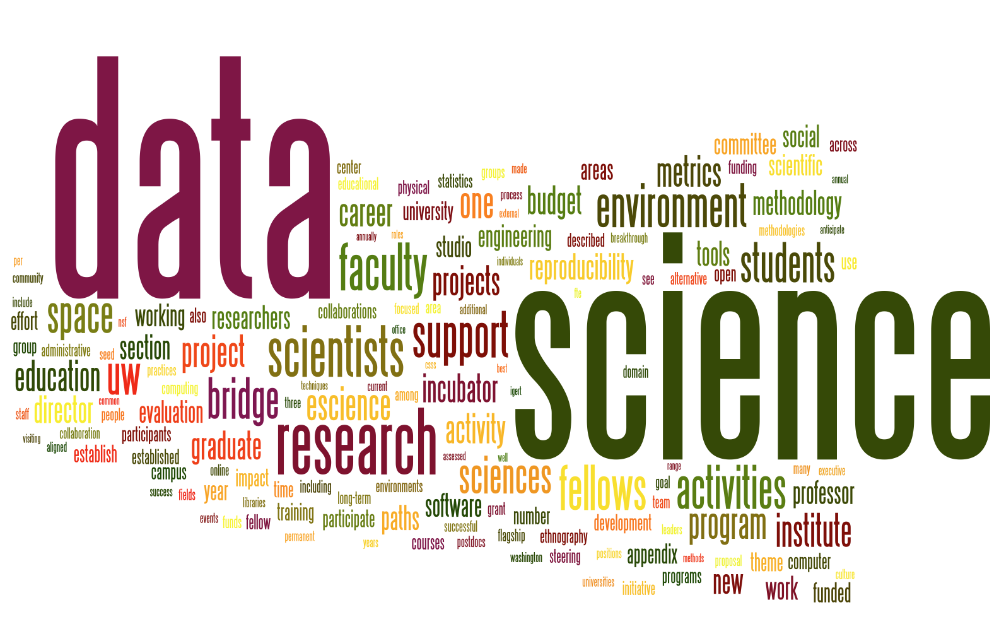

研習資料檔案櫃
本學期活動訊息
第一部分 軟體研習
Python軟體
- 網路爬蟲（一）：林哲瑋老師 2018/04/25 12:00~15:00
- 網路爬蟲（二）：林哲瑋老師 2018/05/02 12:00~15:00
Ｒ軟體
- 網路爬蟲（三）：吳漢銘老師 2018/05/16 12:00~15:00
- 網路爬蟲（四）：吳漢銘老師 2018/05/23 12:00~15:00
第二部分 讀書會
Python與時間數列: 謝宜倪老師
Python與微積分: 王怡修老師
Python與空間分析: 陳建良老師
Python與比特幣: 陳菁瑶老師
Python與統計學: 田弘華老師